|
Uncommon Soldiers
|
|
From a statistical standpoint, the common American
soldier of the Civil War was a native-born farmer with a
light complexion, blue eyes and brown hair, standing five
feet eight and one-quarter inches tall. He was most likely
to be a "doughboy" and serve in the infantry.
Once he had decided to join the army, however, any
average volunteer had the chance to become an uncommon
soldier. He could join a special type of infantry regiment,
such as the French-inspired zouave and chasseur units, with
their colorful and distinctive uniforms--or become a hussar
with a European cavalry uniform of braided jacket and jaunty
cap. Or he and his comrades in arms might find a less
obvious way to mark their regiment as special, as did the
124th New York Volunteer Infantry--the "Orange
Blossoms"--who wore orange ribbons on the front of their
uniforms to match their nickname. Such special uniforms or
insignia were a source of esprit de corps for a regiment and
were maintained throughout the entire war, not discarded as
most believe. In fact, the Army of the Potomac mustered more
uniformed regiments of zouaves in 1865 than it did in 1861.
Other soldiers became uncommon through occupational
specialties, such as the farriers who cared for horses, or
the pioneers who cleared the armies' paths of obstacles and
worked on fortifications. The brave men who carried their
regiments' flags through storms of iron and lead were
certainly uncommon soldiers. Then there were the soldiers of
the engineer and ordnance departments, who not only worked
in their specialties, but also supported combat units in
battle. The men of the two regiments of green-clad U.S.
Sharpshooters were an especially uncommon breed, carefully
selected for their skill with firearms and used on the
battlefield as elite marksmen and snipers.
The portrait gallery that follows features soldiers
uncommon for all the reasons listed above and
more--including some who were uncommon in and of themselves.
These, however, are only a handful of the Civil War's
innumerable uncommon soldiers--men who helped reshape their
nation.
|
|
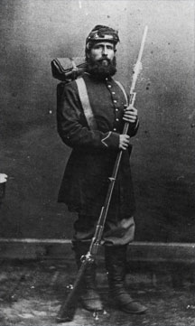
|
Chauncy S. Maltby served in the 2nd U.S. Sharpshooters. It
is fair to say that all the sharpshooters were uncommon
soldiers, because they had to demonstrate their skills as
marksmen before they were allowed to join the regiment.
Wearing distinctive uniforms of dark green with emerald
green trim, the sharpshooters proved their value on all the
major eastern battlefields of the Civil War. In this Brady
Studio portrait, Maltby still carries the Colt revolving
rifle his regiment carried until Sharps rifles were
available.
|
|
|
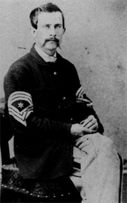
|
Moses P. Ross of the 124th New York Volunteer Infantry
wears the inconspicuous orange ribbon that denoted the
"Orange Blossoms" of Orange County, New York, looped about
the second button of his sack coat. His chevrons denote the
rank of principal musician.
|
|
|
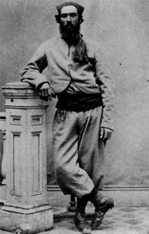
|
Chauncey Monroe of the 146th New York nonchalantly sports
the sky blue Turco uniform of his regiment. The uniform,
based on that of North African native troops in the Trench
Army, was first worn at the Battle of Gettysburg. Monroe's
uniform inexplicably lacks the yellow tape trim normally
worn on the jacket and vest.
|
|
|
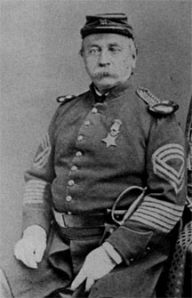
|
Sergeant Major Frederick W. Gerber of the U.S. Engineers
was not a typical soldier. Born in Germany in 1813, he had
been in the U.S. Army for 22 years when the Civil War began
in 1861. He retired in 1871, after receiving a Medal of
Honor for "distinguished gallantry in many actions and in
recognition of long, faithful services." His Medal of Honor
was rescinded in the next century when prior awards were
reviewed.
|
|
|
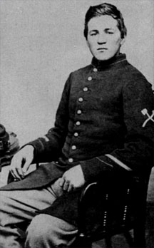
|
This unidentified Massachusetts pioneer Is from a veteran
regiment, as shown by the veteran's stripes above his
cuffs. The crossed axes Insignia symbolized the tools these
special soldiers used. As one writer remarked, "no regiment
Is well fitted for service without pioneers completely
equipped." These men cleared any obstacles to the army's
march.
|
|
|
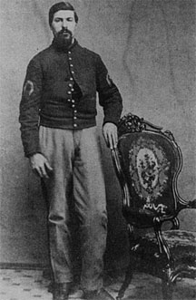
|
Each cavalry or mounted artillery regiment had ten
farriers, or blacksmiths--one per company. Responsible for,
among other things, seeing that the horses were properly
shod, these men received $18 per month rather than the
enlisted man's normal $13. This unidentified farrier
displays the symbol of his job--a horseshoe--on each sleeve.
|
|
|
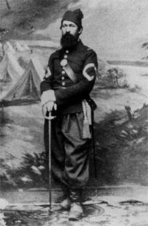
|
Sergeant Major Charles Seager of the 62nd Pennsylvania
Volunteer infantry posed in the famous Brady Studio for this
portrait in his regiment's French-mode chasseur uniform.
Seager would be discharged from service by a surgeon's
certificate of disability.
|
|
|
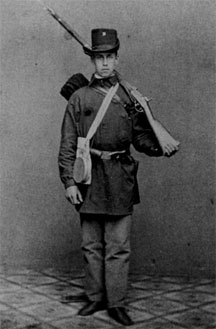
|
"As Marching from Annapolis." This inscription on a Brady
Studio portrait of an unknown private in the 1st Rhode
island Detached Militia refers to the regiment's trek from
Annapolis to Washington, D.C., in the spring of 1861. The
regiment, under Colonel Ambrose Burnside, was recruited from
militia companies and would disband and return home shortly
after the First Battle of Bull Run. Many of these men would
volunteer for other regiments and more service, but they
would never again wear the distinctive blue blouse and felt
hat of those "Minute Men of 1861."
|
|
|
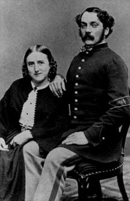
|
Civil War hospital stewards had many duties. They were
pharmacists, performed minor surgery, took care of supplies,
and generally assisted surgeons. In the prewar army,
hospital stewards were assigned to camps or bases, but
during the war each volunteer regiment had a hospital
steward to assist the regimental surgeon. The half-chevron
of green with yellow caduceus was the insignia of the
hospital stewards, whose uniforms were trimmed in crimson.
|
|
|
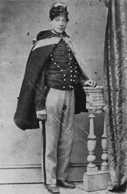
|
One of the war's most colorfully uniformed regiments was
the 3rd New Jersey Volunteer Cavalry, or 1st U.S. Hussars.
This regiment was recruited In late 1863 and early 1864, and
its bright hussar uniform was possibly a recruiting gimmick.
Trimmed in fancy braids of yellow-orange and with flashes of
red, these gaudy uniforms earned the regiment the nickname
the "Butterflies." Sergeant James H. Baird served with the
hussars through the terrible battles in Virginia in
1864-1865, mustering out in August 1865.
|
|
|
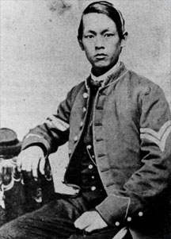
|
Once said to be "the only Chinaman in the Army of the
Potomac," Joseph Pierce of the 14th Connecticut Infantry was
Indeed an uncommon soldier. Pierce served with his regiment
at such battles as Antietam, Fredericksburg,
Chancellorsvllle, and Gettysburg, mustering out with his
fellow Connecticut soldiers and settling in Meriden, where
he was "well known and liked."
|
|
|
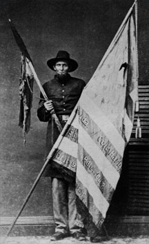
|
Color Sergeant Joseph A. Hastings was truly uncommon.
Born in Canada, he was 6 feet 6 inches tall, which would
make him an "outstanding" men even today. Hastings proudly
and bravely carried the colors of the 118th New York
Volunteer Infantry, returning them safely home at the end of
the war. Here he holds the national colors--edged in black In
mourning for Abraham Lincoln--and the remnants at another
flag.
|
|
Source: Civil War Times Illustrated
42:5 (December 2003), 60-65.
|
|
|